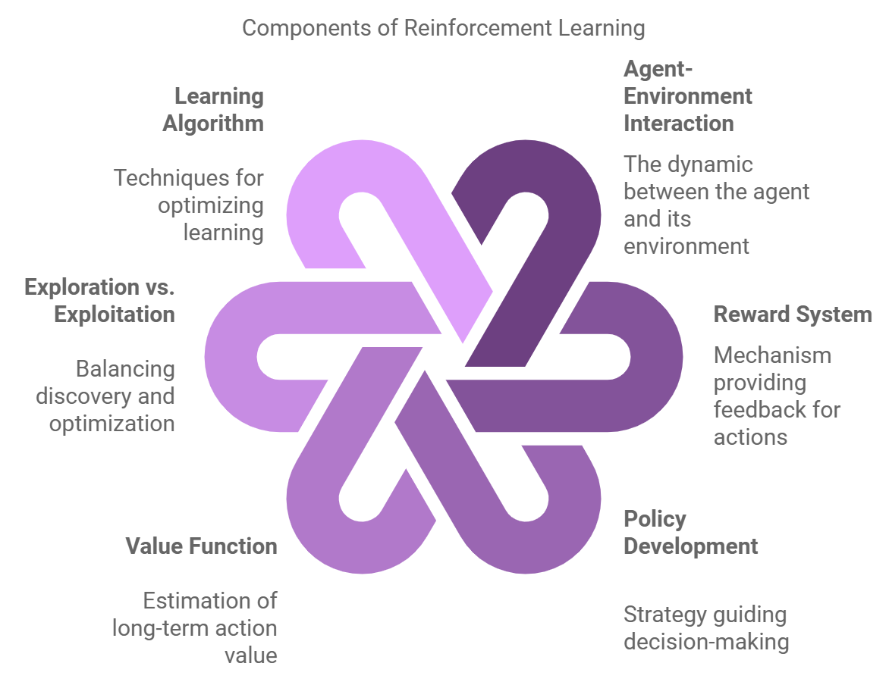
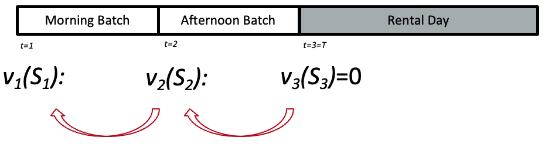

An Introduction to Reinforcement Learning
Mustafa Aslan, PhD Researcher
Data Lab for Social Good Research Lab
Cardiff University, UK
Slides: https://mustafaslancoto.github.io/workshops/
29 May 2025
Outline
- What is Reinforcement Learning
- Markov Decision Processes
- Dynamic Programming
- Monte Carlo Methods
- Temporal Difference Learning
- Sarsa
- Q-learning
- More advanced approximation methods
What is reinforcement learning
Reinforcement Learning
Reinforcement learningis learning what to do—how to map situations to actions to maximize a numerical reward signal.- The learner is not told which actions to take, but instead must discover which actions yield the most reward by trying them.
Why use Reinforcement Learning?

Model-Free Adaptation: Learns optimal behavior directly from experienceLong-Term Planning: Optimizes decisions over long time horizonsData-Driven Policies: Automatically refines its policy as more data becomes availableScalable to Complex Tasks: Can handle very large state-action spaces via function approximation.
Core Concepts
Agentis the learner and decision maker.- It interacts with the environment continually to select actions
- The environment responds to these actions and presents new situations to the agent.
- It interacts with the environment continually to select actions
A
policydefines the learning agent’s way of behaving at a given time.- A mapping from states of the environment to actions to be taken when in those states.
The
rewardsignal indicates what is good immediately after each decision time.A
value functionspecifies what is good in the long run.- The value of a state is the total amount of reward an agent can expect to accumulate over the future, starting from that state.
Markov Decision Processes (MDPs)
Core definitions
MDPs are a classical formalization of
sequential decision makingor reinforcement learning problemActions taken now influence not only
immediate contributions(e.g. reward, cost, profit), but also future situations (states), and consequently,future contributionsMDPs involve delayed contribution and the need to trade off immediate and delayed contributions
The agent–environment interaction in a decision process

The agent–environment interaction in a decision process
Agent gives rise to a sequence that begins like this
\[ S_0, A_0, R_1, S_1, A_1, R_2, S_2, A_2, R_3, \dots S_t, A_t, R_{t+1} \]
The agent–environment interaction in a decision process (continued)
An MDP can be described by the tuple \((S, A, p, r(a,s), \pi)\), where:
- \(S\) is a finite set of states,
- \(A\) is a finite set of actions,
- \(p(s', r \mid s, a)\) is the probability of transitioning to state \(s' \in S\) and receiving reward \(r(a,s)\) when taking action \(a \in A\) in state \(s \in S\),
- \(r(s, a)\) is the expected immediate reward received after taking action \(a\) in state \(s\),
- \(\pi\) is the policy, a mapping from states to probabilities of selecting each possible action.
The \(p(s', \mid s, a)\) defines the dynamics of the MDP and \(p\) specifies a probability distribution for each choice of \(s\) and \(a\): \[ \sum_{s'\in S}p(s' \mid s, a) = 1, \text{ for all } s \in S, a \in A(s) \]
The Goal of Agent
- At each time step, the reward is a simple number, \(R_t \in \mathbb{R}\) passing from the environment to the agent.
- The agent’s goal is to maximize the total (cumulative) amount of reward it receives in the long run.
- The aim is to maximize the
expected return, \(G_t\), which is defined as: \[ G_t \doteq R_{t+1} + R_{t+2} + R_{t+3}+ \dots+R_T \]
Discounting technique is used to prioritize immediate rewards over future rewards.
- The idea is to multiply future rewards by a discount factor \(\gamma \in (0,1]\)
- This makes future rewards worth less than immediate rewards.
- The return \(G_t\) with discounting is defined as:
\[ G_t \doteq R_{t+1} + \gamma R_{t+2} + \gamma^2 R_{t+3} + \cdots = \sum_{k=0}^{\infty} \gamma^k R_{t+k+1} \]
Policies and Value Functions
A
policyis a mapping from states to probabilities of selecting each possible action. If the agent is following policy \(\pi\) at time \(t\), then \(\pi(a \mid s)\) is the probability that \(A_t = a\) if \(S_t = s\)Value functions—functions of statesestimate how good it is for the agent to be in a given state (or how good it is to perform a given action in a given state).The value of a state \(s\) under a policy \(\pi\), denoted \(v_\pi\) is expressed as \[ v_\pi(s) \doteq \mathbb{E}_\pi[G_t | S_t=s] = \mathbb{E}_\pi\left[\sum_{k=0}^{\infty} \gamma^k R_{t+k+1} \mid S_t=s\right], \text{ for all } s \in S, \]
where \(\mathbb{E}[\cdot]\) denotes the expected value of a random variable given that the agent follows policy \(\pi\), and \(t\) is any time step.
Bellman Equation
To solve stochastic sequential decision problems
We have to model the fact that new information becomes available after we make the decision \(a_t\).
The result can be uncertainty in both the contribution earned, and in the determination of the next state we visit, \(S_{t+1}\).
We estimate the expected future contributions (cumulative rewards) and add the immediate contribution received from the action taken in the current state following a given policy. This relationship is expressed by the Bellman equation, defined as:
\[ V_\pi(S_t) = \max_{a_t \in A_t} \left(r_{t+1}(S_t, a_t) +\ \gamma \mathbb{E}[V_{t+1}(S_{t+1}) \mid S_t, a_t] \right) \]
This equation can be solved backward or forward recursively. You get the value functions and at the same time an optimal policy at time \(t\)
\[ a_t^*(S_t) = \arg\max_{a_t \in A_t} \left(r_{t+1}(S_t, a_t) + \gamma [V_{t+1}(S_{t+1}) \mid S_t, a_t] \right), \]
Exercise: Solve the Car Rental Problem
Booking Process:
Exclusively 1-day rentals, must booked the day before.
Bookings arrive randomly in two batches (Morning, Afternoon) of previous day
Each batch has one of the four possible demand (# Large requests, # Small requests)
Booking Controls:
- Accept a booking request
- Reject a booking request
- Upgrade: Small car can be met by the large car offered at £30
| (# Large requests, # Small Requests) | (0,0) | (0,1) | (1,0) | (1,1) |
|---|---|---|---|---|
| Arrival Probability | 3% | 10% | 20% | 67% |
| Small Car | Large car |
|---|---|
| £30 | £40 |
A Working Example: Car Rental Booking Control
Goal: Find a booking control policy that maximises the firm’s expected revenues
What is the value of \(v_1(1,1)\)
What if…
Cars can be rented for more than one day
Longer booking periods
More types of cars
Larger fleet
A network of rental stations
Advanced booking
The Bellman equation could not be solved anymore.- Curse of Dimensionality
- That is where we need Approximate Dynamic Programming and Reinforcement Learning
- To obtain good policies without the need to solve the Bellman equation directly
Dynamic Programming
Policy Evalulation (Prediction)
Policy evaluation is the computation of the state-value function \(v_\pi\) for an arbitrary policy \(\pi\).
Consider a sequence of approximate value functions \(v_0, v_1, v_2,\dots,\). Each successive approximation is obtained by using the
Bellman equationfor \(v_\pi\) as an update rule:
\[ \begin{aligned} v_{k+1}(s) &\doteq \mathbb{E}_\pi \big[G_t \mid S_t = s \big] \\ &= \mathbb{E}_\pi \big[r_{t+1} + \gamma G_{t+1} \mid S_t = s \big] \\ &\doteq \mathbb{E}_\pi \big[r_{t+1} + \gamma v_k(S_{t+1}) \mid S_t = s \big] \\ &= \sum_a \pi(a \mid s) \sum_{s',r} p(s', r \mid s, a) \big[ r + \gamma v_k(s') \big]. \end{aligned} \]
where \(k\) refers to iteration number.
Policy Evalulation (Prediction)
The sequence \({v_k}\) can be shown in general to converge to \(v_\pi\) as \(k \rightarrow \infty\). This algorithm is called iterative policy evaluation.
Iterative Policy Evaluation, for estimating \(V \approx v_\pi\)
Input:
\(\pi\), the policy to be evaluated
Algorithm parameter: a small threshold \(\theta > 0\) determining accuracy of estimation
Initialize \(V(s)\) arbitrarily, for \(s \in S\), and \(V(\text{terminal}) = 0\)
Loop:
\(\Delta \leftarrow 0\)
Loop for each \(s \in S\):
\(v \leftarrow V(s)\)
\(V(s) \leftarrow \sum_a \pi(a|s) \sum_{s', r} p(s', r | s, a) [r + \gamma V(s')]\)
\(\Delta \leftarrow \max(\Delta, |v - V(s)|)\)
until \(\Delta < \theta\)
Policy Improvement
We know how good it is to follow the current policy from \(s\)—that is \(v_\pi(s)\)
But would it be better or worse to change to the new policy?
Once a policy, \(\pi\), has been improved using \(v_\pi\) to yield a better policy, \(\pi^{'}\), we can then compute \(v_{\pi^{'}}\) and improve it again to yield an even better \(\pi^{''}\).
\[ \pi_0 \xrightarrow E v_{\pi_0} \xrightarrow I \pi_1 \xrightarrow E v_{\pi_1}\xrightarrow I \pi_2,\dots \xrightarrow I \pi_* \xrightarrow E v_* \]
where \(\xrightarrow E\) denotes a policy evaluation and \(\xrightarrow I\) denotes a policy improvement. This way of finding an optimal policy is called policy iteration.
Policy Iteration
A complete policy iteration algorithm
Policy Iteration (using iterative policy evaluation) for estimating \(\pi \approx \pi_*\)
1. Initialization
\(V(s) \in \mathbb{R}\) and \(\pi(s) \in A(s)\) arbitrarily for all \(s \in S\)
\(V(\text{terminal}) \doteq 0\)
2. Policy Evaluation
Loop:
\(\Delta \leftarrow 0\)
Loop for each \(s \in S\):
\(v \leftarrow V(s)\)
\(V(s) \leftarrow \sum_{s', r} p(s', r \mid s, \pi(s)) \left[r + \gamma V(s')\right]\)
\(\Delta \leftarrow \max(\Delta, |v - V(s)|)\)
Until \(\Delta < \theta\) (a small positive number determining the accuracy of estimation)
3. Policy Improvement
policy-stable \(\leftarrow\) true
For each \(s \in S\):
old-action \(\leftarrow \pi(s)\)
\(\pi(s) \leftarrow \arg\max_a \sum_{s', r} p(s', r \mid s, a)\left[r + \gamma V(s')\right]\)
If old-action \(\ne \pi(s)\), then policy-stable \(\leftarrow\) false
If policy-stable, then stop and return \(V \approx v_*\) and \(\pi \approx \pi_*\);
Else go to step 2
Value Iteration
- One drawback to policy iteration is that each of its iterations involves policy evaluation, which may need a huge iterative computation requiring multiple sweeps through the state set.
- Value iteration is a special case of policy iteration where the policy evaluation step is truncated to just one sweep.
- This algorithm combines the policy improvement and truncated policy evaluation steps into a single update operation:
\[ \begin{aligned} v_{k+1}(s) &= \mathbb{E} \big[R_{t+1} + \gamma v_k(S_{t+1}) \mid S_t=s, A_t = a \big] \\ &=\max_a \sum_{s', r} p(s', r \mid s, a) \big[ r + \gamma v_k(s') \big] \end{aligned} \]
for all \(s \in S\).
Value Iteration
- Value iteration is also obtained simply by turning the Bellman optimality equation into an update rule.
- Also note how the value iteration update is identical to the policy evaluation update except that it requires the maximum to be taken over all actions.
Value Iteration, for estimating \(\pi \approx \pi_*\)
Algorithm parameter:
A small threshold \(\theta > 0\) determining the accuracy of estimation
Initialization:
Initialize \(V(s)\) arbitrarily for all \(s \in S^+\), except that \(V(\text{terminal}) = 0\)
Loop:
\(\Delta \leftarrow 0\)
Loop for each \(s \in S\):
\(v \leftarrow V(s)\)
\(V(s) \leftarrow \max_a \sum_{s', r} p(s', r \mid s, a) \left[ r + \gamma V(s') \right]\)
\(\Delta \leftarrow \max(\Delta, |v - V(s)|)\)
until \(\Delta < \theta\)
Output:
A deterministic policy, \(\pi \approx \pi_*\), such that
\(\pi(s) = \arg\max_a \sum_{s', r} p(s', r \mid s, a) \left[ r + \gamma V(s') \right]\)
Let’s code
Monte Carlo Methods
Monte Carlo (MC) Methods
The term “Monte Carlo” is often used more broadly for any estimation method whose operation involves a significant random component.
MC methods solve reinforcement learning problems by averaging results (returns) from sampled experiences sequences of states, actions, and rewards.
They do not require knowledge of the environment’s dynamics, making them powerful for learning from real or simulated experiences.
Monte Carlo Prediction
Suppose we wish to estimate \(v_{\pi}(s)\), the values of a state \(s\) under policy \(\pi\), given a set of episodes obtained by following \(\pi\) and passing through \(s\).
First-Visit Monte Carlo Prediction (for estimating \(V \approx v_\pi\))
Input:
A policy \(\pi\) to be evaluated
Initialize:
\(V(s) \in \mathbb{R}\) arbitrarily, for all \(s \in S\)
\(\text{Returns}(s) \leftarrow\) an empty list, for all \(s \in S\)
Loop forever (for each episode):
Generate an episode following \(\pi\): \(S_0, A_0, R_1, S_1, A_1, R_2, \dots, S_{T-1}, A_{T-1}, R_T\)
\(G \leftarrow 0\)
Loop for each step of the episode, \(t = T-1, T-2, \dots, 0\):
\(G \leftarrow \gamma G + R_{t+1}\)
Unless \(S_t\) appears in \(S_0, S_1, \dots, S_{t-1}\):
Append \(G\) to \(\text{Returns}(S_t)\)
\(V(S_t) \leftarrow \text{average}(\text{Returns}(S_t))\)
Monte Carlo Control
Alternating complete steps of policy evaluation and policy improvement are performed, beginning with an arbitrary policy \(\pi_0\) and ending with the optimal policy and optimal action-value function:
\[ \pi_0 \xrightarrow E q_{\pi_0} \xrightarrow I \pi_1 \xrightarrow E q_{\pi_1}\xrightarrow I \pi_2,\dots,\xrightarrow I \pi_* \xrightarrow E q_* \]
Monte Carlo ES (Exploring Starts), for estimating \(\pi \approx \pi_*\)
Initialize:
\(\pi(s) \in A(s)\) arbitrarily, for all \(s \in S\)
\(Q(s, a) \in \mathbb{R}\) arbitrarily, for all \(s \in S, a \in A(s)\)
\(\text{Returns}(s, a) \leftarrow\) empty list, for all \(s \in S, a \in A(s)\)
Loop forever (for each episode):
Choose \(S_0 \in S, A_0 \in A(S_0)\) randomly, such that all pairs have probability \(> 0\)
Generate an episode from \(S_0, A_0\), following \(\pi\):
\(S_0, A_0, R_1, \dots, S_{T-1}, A_{T-1}, R_T\)
\(G \leftarrow 0\)
Loop for each step of episode, \(t = T-1, T-2, \dots, 0\):
\(G \leftarrow \gamma G + R_{t+1}\)
Unless the pair \((S_t, A_t)\) appears in
\(S_0, A_0, S_1, A_1, \dots, S_{t-1}, A_{t-1}\):
Append \(G\) to \(\text{Returns}(S_t, A_t)\)
\(Q(S_t, A_t) \leftarrow \text{average}(\text{Returns}(S_t, A_t))\)
\(\pi(S_t) \leftarrow \arg\max_a Q(S_t, a)\)
Let’s code
Monte Carlo Control without Exploring Starts
- In on-policy control methods the policy is generally soft, meaning that \(\pi(a\mid s)>0\) for all \(s \in S\) and all \(a \in A(s)\), but gradually shifted closer and closer to a deterministic policy.
- The on-policy method we present in this section uses \(\epsilon\)-greedy policies, meaning that most of the time they choose an action that has maximal estimated action value, but with probability \(\epsilon\) they instead select an action at random. That is, all nongreedy actions are given the minimal probability of selection, \(\frac{\epsilon}{|A(s)|}\), and the remaining bulk of the probability \(1-\epsilon+\frac{\epsilon}{|A(s)|}\) is given to the greedy action.
- \(\epsilon\)-greedy policies are examples of \(\epsilon-soft\) policies, definied as policies for which \(\pi(a \mid s) \geq \frac{\epsilon}{|A(s)|}\) for all states and actions, for some \(\epsilon > 0\). Among \(\epsilon\)-soft policies, \(\epsilon\)-greedy policies are in some sense those that are closest to greedy.
Monte Carlo Control without Exploring Starts
On-policy First-Visit MC Control (for \(\varepsilon\)-soft policies), estimates \(\pi \approx \pi_*\)
Algorithm parameter:
Small \(\varepsilon > 0\)
Initialize:
\(\pi \leftarrow\) an arbitrary \(\varepsilon\)-soft policy
\(Q(s, a) \in \mathbb{R}\) arbitrarily, for all \(s \in S, a \in A(s)\)
\(\text{Returns}(s, a) \leftarrow\) empty list, for all \(s \in S, a \in A(s)\)
Repeat forever (for each episode):
Generate an episode following \(\pi\): \(S_0, A_0, R_1, \dots, S_{T-1}, A_{T-1}, R_T\)
\(G \leftarrow 0\)
Loop for each step of episode, \(t = T-1, T-2, \dots, 0\):
\(G \leftarrow \gamma G + R_{t+1}\)
Unless the pair \((S_t, A_t)\) appears in \(S_0, A_0, \dots, S_{t-1}, A_{t-1}\):
Append \(G\) to \(\text{Returns}(S_t, A_t)\)
\(Q(S_t, A_t) \leftarrow \text{average}(\text{Returns}(S_t, A_t))\)
\(A^* \leftarrow \arg\max_a Q(S_t, a)\) (ties broken arbitrarily)
For all \(a \in A(S_t)\):
\(\pi(a \mid S_t) \leftarrow \begin{cases}
1 - \varepsilon + \varepsilon / |A(S_t)| & \text{if } a = A^* \\
\varepsilon / |A(S_t)| & \text{if } a \ne A^*
\end{cases}\)
where \(|A(s)|\) is the number of actions available in state \(s\).
The \(\epsilon\)-greedy policy ensures that all actions are tried, but actions with higher value estimates are tried more frequently. This balances exploration (trying new actions) and exploitation (choosing the best-known action).
Temporal-Difference (TD) Learning
What is TD Learning
- TD learning is a combination of Monte Carlo ideas and dynamic programming (DP) ideas.
- Like Monte Carlo methods, TD methods can learn directly from raw experience without a model of the environment’s dynamics.
- Like DP, TD methods update estimates without waiting for a final outcome.
- Whereas Monte Carlo methods must wait until the end of the episode to determine the increment to \(V(St)\)
The simplest TD method updates \(v_(S_t)\) as follow:
\[ v(S_t) \leftarrow v(S_t) + \alpha \big[r_{t+1} + \gamma v(S_{t+1})-v(S_t) \big] \]
TD Prediction
Tabular TD(0) for Estimating \(v_\pi\)
Input:
The policy \(\pi\) to be evaluated
Algorithm parameter:
Step size \(\alpha \in (0, 1]\)
Initialize:
\(V(s)\) arbitrarily for all \(s \in S^+\), except that \(V(\text{terminal}) = 0\)
Loop for each episode:
Initialize \(S\)
Loop for each step of episode:
\(A \leftarrow\) action given by \(\pi\) for \(S\)
Take action \(A\), observe \(R\), \(S'\)
\(V(S) \leftarrow V(S) + \alpha \left[ R + \gamma V(S') - V(S) \right]\)
\(S \leftarrow S'\)
Until \(S\) is terminal
Sarsa: On-policy TD Control
We consider transitions from state–action pair to state–action pair, and learn the values of state–action pairs.
\[ Q(S_t, A_t) \leftarrow Q(S_t, A_t) + \alpha \big[R_{t+1}+\gamma Q(S_{t+1}, A_{t+1})-Q(S_t, A_t) \big] \]
SARSA (On-Policy TD Control), for estimating \(Q \approx q_*\)
Algorithm parameters:
Step size \(\alpha \in (0, 1]\), small \(\varepsilon > 0\)
Initialize:
\(Q(s, a)\) arbitrarily, for all \(s \in S^+\), \(a \in A(s)\)
\(Q(\text{terminal}, \cdot) = 0\)
Loop for each episode:
Initialize \(S\)
Choose \(A\) from \(S\) using a policy derived from \(Q\) (e.g., \(\varepsilon\)-greedy)
Loop for each step of episode:
Take action \(A\), observe \(R\), \(S'\)
Choose \(A'\) from \(S'\) using a policy derived from \(Q\) (e.g., \(\varepsilon\)-greedy)
\(Q(S, A) \leftarrow Q(S, A) + \alpha \left[ R + \gamma Q(S', A') - Q(S, A) \right]\)
\(S \leftarrow S';\quad A \leftarrow A'\)
Until \(S\) is terminal
Q-learning: Off-policy TD Control
Q-learning is defined by
\[ Q(S_t, A_t) \leftarrow Q(S_t, A_t)+ \alpha \big[R_{t+1}+\gamma \max_aQ(S_{t+1}, a)-Q(S_t, A_t) \big] \]
The Q-learning algorithm is shown below in procedural form.
Q-learning (Off-Policy TD Control), for estimating \(\pi \approx \pi_*\)
Algorithm parameters:
Step size \(\alpha \in (0, 1]\), small \(\varepsilon > 0\)
Initialize:
\(Q(s, a)\) arbitrarily for all \(s \in S^+\), \(a \in S(s)\),
except that \(Q(\text{terminal}, \cdot) = 0\)
Loop for each episode:
Initialize \(S\)
Loop for each step of episode:
Choose \(A\) from \(S\) using a policy derived from \(Q\) (e.g., \(\varepsilon\)-greedy)
Take action \(A\), observe \(R\), \(S'\)
\(Q(S, A) \leftarrow Q(S, A) + \alpha \left[ R + \gamma \max_a Q(S', a) - Q(S, A) \right]\)
\(S \leftarrow S'\)
Until \(S\) is terminal
Let’s code
Model-based vs Model-free Methods
Model-based
- The agent knows/learns the model of the environment
- They then compute the policy using the ADP methods or the model-free methods on simulated data
Pros:
- Sample efficient
- Safer exploration
Cons:
- Prone to the model errors
- Learning a model is challenging
Model-free
- The agent does not know the model of the environment
- They learn the values or policies from trial-and-error interactions with the environment
Pros:
- Do not need a model
- Flexible
Cons:
- Sample inefficient: requires a lot of interactions with the environment
- Slow convergence
Recommended materials
Readings:
- Reinforcement Learning: An Introduction by Richard S. Sutton and Andrew G. Barto
- Reinforcement Learning and Stochastic Optimization by Warren B. Powell